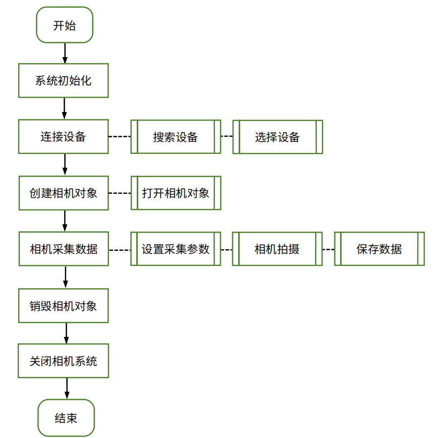

基础流程
RVC 相机调用的逻辑流程图如下。

API 接口详细说明可查看安装目录下的文档：
Windows 系统：/RVCSDK/docs/RVC SDK Documentation.html
Linux 系统：/opt/RVC/docs/RVC SDK Documentation.html
运行错误代码可查看安装目录下的文件：
Windows 系统：/RVCSDK/docs/ErrorCode.csv
Linux 系统：/opt/RVC/docs/ErrorCode.csv
图像获取基础流程及示例代码如下。
1. 系统初始化
硬件准备工作完成后，首先必须初始化 RVC 系统。执行下列代码：
2. 连接设备
a. 查找设备
查找设备有两种方式，一种是根据设备类型查找，一种是根据序列号查找。
根据设备类型查找：SystemListDeviceType 可选 USB（USB 相机）、GigE（网口相机）、All（所有类型相机）。以查找网口相机并选取列表中的第 1 台设备为例：
List<Device> devices = RVC_CSharp.System.ListDevices(SystemListDeviceType.GigE);
Device d1 = devices[0];
根据序列号查找：以查找序列号为 P2GM630W002 的设备为例。
b. 查看设备信息
通过 GetDeviceInfo()函数的返回值，可获取设备连接状态。true 代表已连接且成功获取相机驱动，false 代表相机不可用。
设备信息中各字段的含义见下表。
| 字段 | 含义 | 数据类型 | 取值说明 |
|---|---|---|---|
| name | 相机名称 | char | - |
| sn | 相机序列号 | char | - |
| factorydate | 出厂日期 | char | - |
| port | 端口 | char | - |
| type | 支持端口类型 | enum | PortType_USB：USB 相机 PortType_GigE：网口相机 |
| cameraid | 相机 ID | enum | CameraID_Left：单目相机（左相机） CameraID_Right：单目相机（右相机） CameraID_Both：双目相机 |
| boardmodel | 主板型号 | int | - |
| support_x2 | 支持双相机 | bool | true：支持双相机 false：不支持双相机 |
| support_color | 支持光机投影颜色 | enum | 仅双目模式下可用。 ProjectorColor_Red：红色 ProjectorColor_Green：绿色 ProjectorColor_Blue：蓝色 ProjectorColor_White：白色 |
| workingdist_near_mm | 工作距离最小值（mm） | int | - |
| workingdist_far_mm | 工作距离最大值（mm） | int | - |
| firmware_version | 固件版本 | char | - |
| support_capture_mode | 支持拍摄模式 | enum | P/I/X 系列相机： CaptureMode_Fast：快速模式 CaptureMode_Normal：标准模式 G 系列相机： CaptureMode_Ultra：高精度模式 CaptureMode_Robust：抗干扰模式 |
3. 创建相机对象
a. 创建相机对象
选取 1 台设备，创建相机对象。由设备信息中的 cameraid 字段，可查看当前相机对象可使用的 ID。
单目相机：只能创建 X1 对象，且必须与 DeviceInfo 中的 ID 保持一致，使用 CameraID_Left 或 CameraID_Right。下面代码可调用设备列表中的相机 d1，使用单目模式左相机，创建一个 X1 对象 x1。
双目相机：可创建 X1 对象与 X2 对象。创建 X1 对象时可选择使用 CameraID_Left（左相机）或 CameraID_Right（右相机），使用方法同单目相机；创建 X2 对象时使用双目模式。下面代码可调用设备列表中的设备 device，创建一个 X2 对象 x2。
b. 打开相机
以打开 x1 为例。
通过 IsOpen() 函数的返回值，可判断当前相机是否打开且可用。
4. 相机采集数据
a. 设置拍摄参数并采集
相机采集的常规步骤是先设置拍摄参数，再调用 Capture() 或 Capture2D() 函数进行点云与图像采集。下面以单目模式为例进行说明。
如果需要手动修改各项参数，可使用方法一或方法二。各项参数的详细介绍见参数设置。在实际应用中，建议直接使用相机内部的参数，或从参数配置文件中加载参数，详见方法三与方法四。
方法一：使用系统默认参数，并修改。
使用修改后的 options 作为拍摄参数，调用 Capture() 函数，采集 1 帧点云与 1 帧 2D 图：
使用修改后的 options 作为拍摄参数，调用 Capture2D() 函数，仅采集 1 帧 2D 图：
采集完成后，修改后的参数将写入相机。
方法二：加载相机的内部参数，并修改。
X1.CaptureOptions options = new X1.CaptureOptions();
x1.LoadCaptureOptionParameters(ref options);
// TODO:modify options
使用修改后的 options 作为拍摄参数，调用 Capture() 函数，采集 1 帧点云与 1 帧 2D 图：
使用修改后的 options 作为拍摄参数，调用 Capture2D() 函数，仅采集 1 帧 2D 图：
采集完成后，修改后的参数将写入相机。
方法三：直接使用相机内部参数。可先在 RVCManager 软件中完成调参，将参数写入相机，之后在 SDK 中直接调用相机内存储的参数。
调用 Capture() 函数，采集 1 帧点云与 1 帧 2D 图。Capture() 函数的参数缺省时，将直接使用相机内部存储的参数。
调用 Capture2D() 函数，仅采集 1 帧 2D 图。Capture2D() 函数的参数缺省时，将直接使用相机内部存储的参数。
方法四：从配置文件中加载参数，并拍摄。如果需要同时调用多台相机进行拍摄，可将不同相机的拍摄参数保存为配置文件，在拍摄前导入配置文件以获取参数。
调用 Capture() 函数，采集 1 帧点云与 1 帧 2D 图。Capture() 函数的参数缺省时，将直接使用相机内部存储的参数。
调用 Capture2D() 函数，仅采集 1 帧 2D 图。Capture2D() 函数的参数缺省时，将直接使用相机内部存储的参数。
注意
导入参数前，需检查配置文件中的参数是否适用于当前连接的相机，否则可能出现异常。
建议在同型号的相机之间导出/载入参数，并确保拍摄环境类似。
b. 保存数据
若采集成功，可通过下面代码保存.ply+ASCII 格式的 3D 点云。
由于 ASCII 保存较慢，也可调用 SavePlyBinary() 函数，使用二进制保存。
PointMap pointMap = x1.GetPointMap();
string pointCloudFile = $"./{info.name}-{info.sn}/PointCloud.ply";
pointMap.SavePlyBinary(pointCloudFile);
SaveColorPointCloud() 函数可保存彩色点云。
Image image = x1.GetImage();
PointMap pointMap = x1.GetPointMap();
string colorPointCloudFile = $"./{info.name}-{info.sn}/{i}-ColorPointCloud.ply";
pointMap.SaveColorPointCloud(image, colorPointCloudFile);
可通过下面代码保存 2D 图像。
如需获取并保存深度图，可执行如下代码。